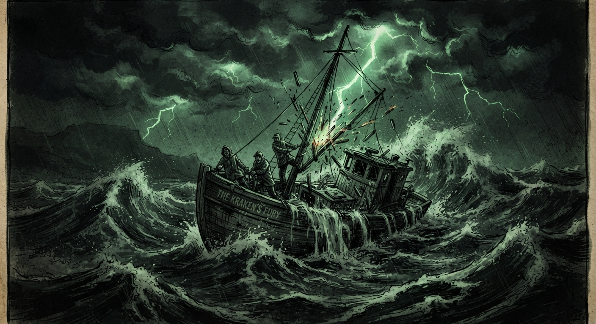
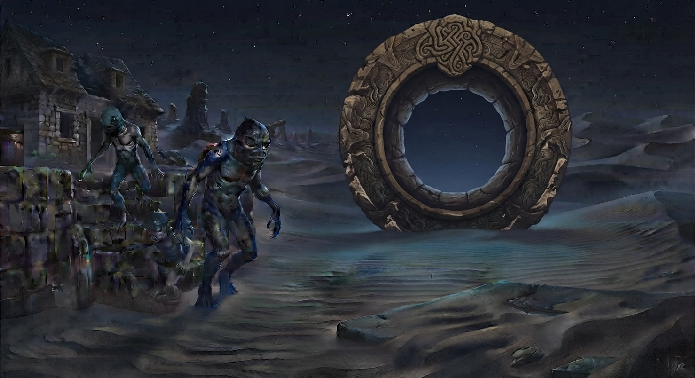

Karadeniz'in Altındaki Dehşet

Bu Oyun Call of Cthulhu 7th Edition ile oynanmak için uygundur.
Bu macerada araştırmacılar ölebilir, delirebilir ve sonsuza dek denizin derinliklerinde kaybolabilir. Yaşayan araştırmacılar hikayeye devam eder.
Giriş
Birleşik Krallık, 1. Dünya Savaşı sonrasında yükselen Nazilerin ve Sovyetler'in Karadeniz'de keşif yaptığı haberini almıştır. Alınan istihbarata göre bu bölgede doğaüstü, hatta büyülü olaylar yaşanmaktadır. Birleşik Krallık, bir araştırma enstitüsü altında bir ekibi gizli bir araştırma için Karadeniz'e yollar. Ekip 12.09.1934 tarihinde Sinop limanına ulaşır.
Güzergah
Ekip, Karadeniz'den Dursun kaptanın mavnası ile denize açılır. Yetkililerin bu görevden haberi yoktur ve ekip kendisini bir grup araştırmacı olarak tanıtmıştır. Ekipte (eğer varsa) asker/güvenlik rolünde bulunan ekip üyesinin 1 adet altıpatları ve 6 adet mermisi vardır. Gemide acil durumlar için bir adet balta ve balık pullarını yolmak için bir adet büyük bıçak (halk arasındaki adı ile ekmek bıçağı) bulunmaktadır.
Ekip bir günlük erzak ile gece araştırması için öğlen 12:00 itibari ile denize açılır. Fakat 9 saatlik yolculuk ardından bir fırtına saat 21:00 - 22:00 arasında tekneyi açıklığa sürükler. Tekne buna karşı duramaz ve 4 saatlik bir fırtına ile Karadeniz'in ortasına doğru sürüklenmeye başlar. Bu süreçte ekip üyeleri POW zarı atar ve hard success atamayan herkes 1d4 sanity hasarı alır. Saat 01:00 - 02:00 aralığında fırtınanın şiddetlenmesi ile tekne parçalanmaya başlar ve yelken direğine yıldırım düşmesi sonucunda tekne tamamen dağılır; ekipteki herkes 1d6 sanity hasarı alır.
Su Altındaki Kubbe
Kazadan sonra bir süre ekip denizde derinlere doğru sürüklenir. Spot Hidden zarı success olan araştırmacılar hiçbir deniz canlısı olmadığını ve derinlere doğru gizli bir kuvvetin kendilerini çektiğini fark eder(ler). Bir süre sonra suyun olmadığı, havanın suyun gizemli bir şekilde ayrıldığı bir kubbenin içerisine düşerler. Başarılı STR ve CON success atan üyeler 1d2 hasar alırken, başarısız olanlar 1d4 hasar alarak gemi parçaları ile beraber yere çakılırlar. Bu sürede kubbeyi gören ekip üyeleri 1d6 sanity hasarı alır.
Kubbe altındaki kumlar hafif kurudur ve kubbe altı serin olmasına rağmen fırtınanın koptuğu yer kadar soğuk değildir. İleride bir tepe gözükmektedir ve tepenin olduğu yerde birkaç ağaç ve yosun kırmasına benzer, 1 metre ile 2 metre arasında uzunluğa sahip iki düzine kadar bitki gözükmektedir.
Araştırmacıların ilk gördüğü görüntü Dursun kaptanın kayıp olmasıdır. Enkazı arayan ve Spot Hidden zarı success olanlar baltayı, hard success olanlar bıçağı ve extreme success durumunda ise Dursun kaptana ait teknedeki saklı olan bir tüfek içindeki 2 adet saçma mermisini bulurlar.
Karşıdaki tepe dışında görülen diğer alanlarda araştırmacıların Look zarını success atması dahilinde taşlardan dizilmiş bir yol olduğu görülmektedir. Bu taşlar nizami bir şekilde bir kaldırım misali dizilmiştir.
Ek İçerik
Burada duruma bağlı olarak ufak bir baloncuk (5 metre kadar yarıçapa sahip) alana gemi düşebilir ve bir su altı mağarası (büyük kubbeye ilerleyen ve ilerledikçe daha kuru bir hale gelen) ile ana kubbeye varılabilir. Bu yöntem, ana kubbeyi gören araştırmacılara daha çarpıcı bir giriş yaptırmak ya da bu kubbeyi fark etmelerini engellemek için kullanılabilir.
Kubbenin İçerisindeki Dolanma
Taşlardan takip edilen yol, uzun bir yolculuktan sonra maceracıları yaklaşık 30-40 hane kadar taştan ilkel binaların olduğu bir yerleşkeye yönlendirir. Şehrin ilerleyen kısımlarına doğru bakıldığında, yuvarlak ve içi boş 20 metre kadar yükseklikte, üzerinde çeşitli işlemeler olan devasa oval bir çembere benzeyen kayadan bir yapı bulunmaktadır. Burası tepedeki garip bitkiler gibi çeşitli bitkilerle çevrilidir ve ufak bir köyü andırmaktadır.
Yapılar ilkel ve grotesk bir görseldedir ve yerleşkede hiçbir canlı gözükmemektedir. Yerleşke meydanında ilerde gözüken çemberden yapıyla aynı işlemelere sahip derin bir kuyu vardır. Kuyunun etrafında çemberden kuyuya doğru kan izleri bulunur (bunlar kuyuya doğru sürüklenen ceset izleridir; araştırmacılar First Aid zarını success atarlarsa bu kadar kanın sadece bir kişiden gelmeyeceği, henüz 15-20 dakikalık olduğu ve bir cesedin buraya sürüklenerek geldiği anlaşılır).
Başarılı bir Occult zarı atılması dahilinde bu kabartmaların denizlerin tanrısı Dagon’a ait olduğu anlaşılır. Dagon hakkında daha detaylı bilgi alınması için Occult yeteneği 20’den fazla olan birinin success atması gerekir.

İlk Temas
Meydanda duran maceracılar bir süre sonra bir uğultu sesi duymaya başlar. Eğer saklanırlarsa başarılı bir Stealth zarı ile fark edilmezler (bu kısım bir sonraki paragrafta detaylandırılacaktır). Bir grup (oyuncu sayısı / 2 kadar) Deep One sesli bir şekilde ayin/dua sesleri eşliğinde bir cesedi sürükleyerek kuyuya atar.
Bu garip canlılarla ilk karşılaşmada dehşete düşen maceracılar 1d6 sanity zarı atarken, POW zarı hard success olmayanlar ekstra 1d4 sanity zarı atarlar ve toplam sanity değerlerinden bu miktarlar düşer.
Kuyuya ceset atıldıktan sonra yer sallanır ve derin bir uğultu sesi duyulur. Eğer daha önceden Stealth zarı fail olan araştırmacılar varsa, Deep Ones tarafından fark edilirler ve mahluklar araştırmacılarla kavgaya girer.
Eğer mahluklardan birisi kaçarsa şehrin içindeki dev yapıya doğru gider. Giderken çıkardığı sesler yardım çığlıkları gibidir. Eğer yaratık şehre ulaşırsa yaklaşık 3 katlı bir bina kadar yüksek olan bir kuleye girer.
Eğer araştırmacılar bu mahlukatı da öldürürse, kendileri şehre yaklaştıkça bu 3 katlı yüksek binayı görürler. Araştırmacıların Stealth zarının success olması halinde kulenin içine baktığında (kulenin kapısı vardır fakat sonuna kadar açıktır) bir Deep One’ın birkaç cesedi incelediğini görürler. Bu aşamada araştırmacılar 1d4 sanity hasarı alırlar.
Kulenin İçi
Deep One’ın uyarısı (ya da fark edilmeleri) halinde buradaki Deep One ve üst kattan gelen bir diğer Deep One ile arbedeye girişirler. Deep One’ların öldürülmesi üzerine araştırmacılar bu binanın 3 katını da inceleyebilirler:
- En Alt Kat: Sovyet askerlerinin cesetlerini, onlardan kalan silahları ve patlayıcıları (el bombası, dinamit, torpido vb.) bulabilirler. Cesetler incelendiğinde ısırık izleri, boğulma ve pençe izleri açıkça görülebilir. Bu manzarayı gören herkes 1d6 sanity kaybeder.
- 2. Kat: Ayin yapılan bir sunak vardır. İnsan cesetleri burada açıkça kurban edilmiş ve kanları sunağın ortasına doğru akıtılmıştır. Sunakta solda Hydra ana ve sağda Dagon heykelleri vardır. Araştırmacılar bu heykelciklerin ne olduğunu hard Occult zarı ile tespit edebilirler. 1d2 sanity kaybeder.
- En Üst Kat: Hiyeroglif ile ilkel bir yazı kazılıdır. Bu yazı sadece Occult zarı ile okunabilir. Hiyeroglif okunabilirse, bu geçidin Dagon’un dünyaya geleceği geçit olduğu ve kulenin ise kubbeyi ayakta tutan yapı olduğu anlaşılır. Ayrıca köy meydanındaki çukur ise Hydra'nın yuvasıdır. Bunu anlayan herkes 1d3 sanity kaybeder.
Yapı Patlatmak İçin Patlayıcılar
Araştırmacılar 1d3 zar atarlar (ya da 1d6 atıp 1-2 için 1, 3-4 için 2, 5-6 için 3 adet) ve gelen sayı kadar yapı patlatacak cephane elde ederler. Yapılar patlatılabilir ve bunun için araştırmacıların ekstra zar atmasına gerek yoktur; sadece patlatma işlemi için zamana ihtiyaç vardır.
Dev Halka
Dev halkanın altındaki kum birikintisi eşelendiğinde bir tesla bobini veya antene benzer büyük bir yapının tepesi ortaya çıkar. Halka, uzaktan kum taşı gibi maddelerle kaplı gibi görünse de, yakından bakıldığında metalik maddelerle kaplı olduğu anlaşılır. Bir araştırmacı hard Electric Repair zarı ile yapıyı inceler ve başarılı olursa, bu yapının kule ile iletişimde olduğu anlaşılır.
Eğer başarılı bir Occult zarı atılırsa, buradaki geçidin içindeki işlemelerde bu garip Deep One halkının bir tanrıya taptığı ve bu kapının onun gelişini müjdelediği açıkça anlaşılmaktadır.
Çıkış
Bu süreçlerden sonra kasabada başka Deep One kalmamıştır ve karakterler çıkış yolu arar. Anlatıcının yardımı ile karakterler artık yapıları patlatarak yıkması gerektiğini anlar. Eğer kule yıkılırsa kubbe çökmeye başlar.
Geldikleri ilk yerdeki gemi enkazı su altında kalmaya başladıkça, geminin düştüğü yerin altında bir mermer levha olduğu gözükür. Levhanın üzerinde bir insanın geçebileceği kadar genişlikte bir daire vardır ve dairenin derinliği sadece 40 santimetredir. Bu dairenin üstünde anahtar girişine benzer iki adet yuva bulunur ve bu girişlerin üstünde kabartmalar yer alır: Sağda Hydra ana, solda ise Dagon. Eğer kubbe çökmeden araştırmacılar bu heykelcikleri buraya takabilirlerse portal aktifleşir ve araştırmacılar içinden geçebilirler. Eğer heykelleri daha önceden yanlarına aldılarsa doğrudan tünelden geçerler. Heykelleri alıp sonradan gelmeleri uzun sürer ve heykelleri taşıyan kişi yorulur.
Heykellerin yerleşimine göre çıkış noktaları değişir:
- Dagon Solda, Hydra Sağda İse: Derin bir deniz bölgesinde zeminde kumların arasından bir portaldan geçilir. Yukarıya yüzmek için hard Swim zarı atılmalı, yorgun birisi varsa extreme Swim zarı atılmalıdır, aksi takdirde araştırmacı boğulur. Yukarı yüzen araştırmacı(lar) Japonya'nın Ryukyu bölgesine yakın bir adaya ayak basar.
- Hydra Solda, Dagon Sağda İse: Denizde ışığın rahatça zemine geldiği bir yerden araştırmacı(lar) portaldan çıkar. Yüzeye çıkmak için Swim zarı başarılı olmalıdır, yorgun biri varsa hard Swim zarı başarılı olmalıdır. Yukarı yüzen araştırmacılar Bahamalar'da bir adaya ayak basar.
Başarı Kriterleri
- Çukur (Hydra'nın Yuvası): Hydra ananın ağzına açılır, buranın patlatılması bir etki yaratmaz.
- Kule: Yıkılırsa kubbe çökmeye başlar ve insanlık uzun bir süre (belki binlerce yıl) Dagon’un öfkesinden uzak kalır.
- Portalın Yıkılması: Tam başarıdır. Dagon’un gelişini sağlayacak olan portal tamamen yok edilmiş olur ve ilkel olan bu canlılar tarafından bir daha yapılamaz.
Kısmi Başarı Kriterleri
Japonya
Araştırmacılar eğer delirmezse Japon hükümetinin esiri olur ve iade edilirler. Eğer delirirlerse idam edilirler.
Bahamalar
Araştırmacılar eğer delirmezse ülkelerine iade edilirler. Eğer delirirlerse Amerika Birleşik Devletleri'ne yollanır ve akıl hastanesine yerleştirilirler.